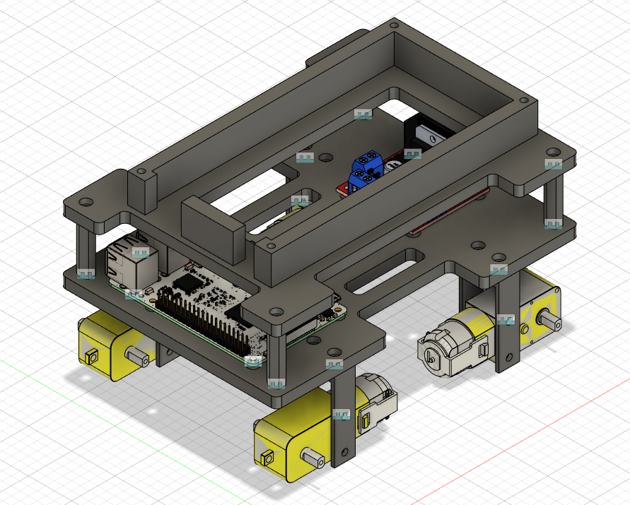
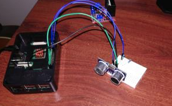
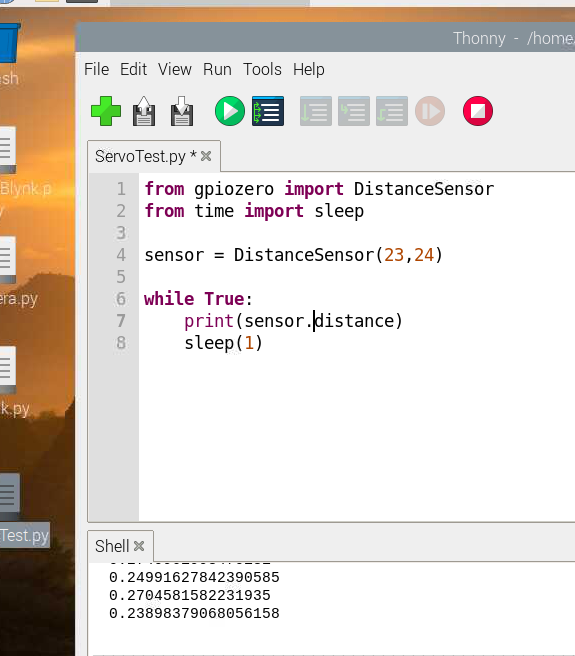
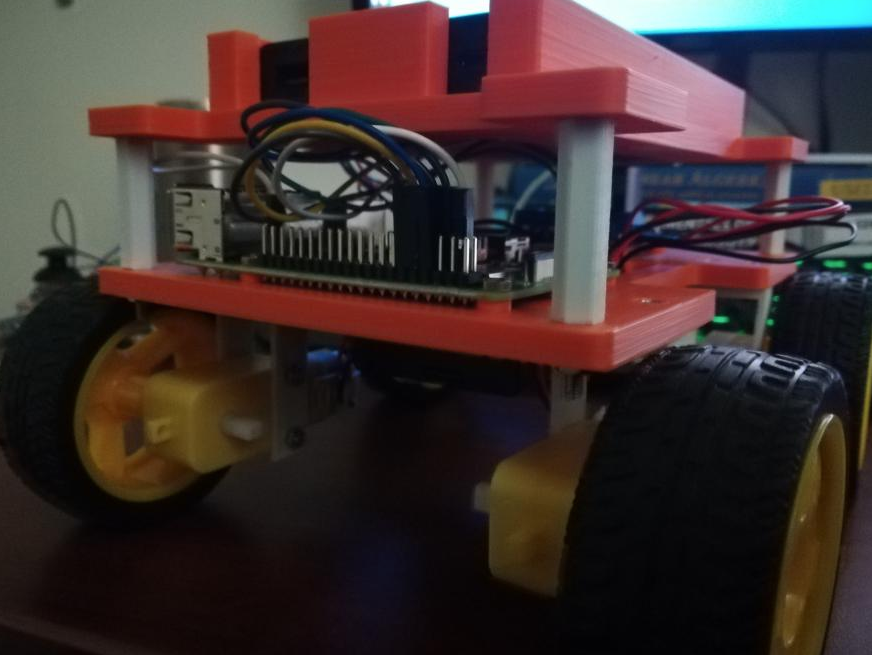
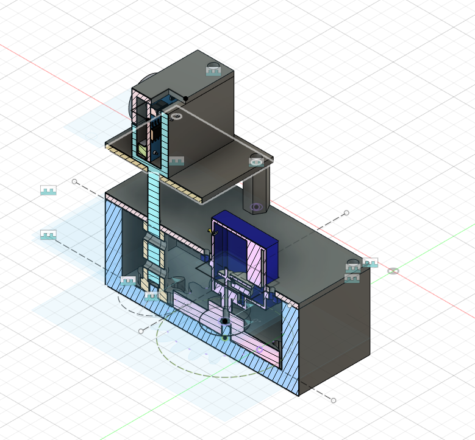

Personal Map Rover Robots
I would like to design a personal robot which i could use in my home.
-Goal: is to design a Robots could map the unkonw surrounding obstacle.
-material need: ultrosonic sensor, acclerometer, camera, servo, and robot builded in phase 2.
-the map is record as a angle and distance coordinate as a file. And might build a real time remote graphy. (depend on time)

First, i redesign the configeration of my robot. And move my raspberry pi to base1. And now I will be able to charge my battery wtihout
tear the robot apart.


I import the Distance Sesnor and run the code. It returns the distance in meter.

The new configuration is printed and now i could charge my rover or change the baterry without disassemble them.

The servo only be able to move a 180 degree angle. In order to move the Ultrasonic Sensor for 360. I need to desgin at least 2 over 1 gear ratio gearbox.
This is my CAD model of my gearbox. the gear ratio is 20 oever 8.
Home Back